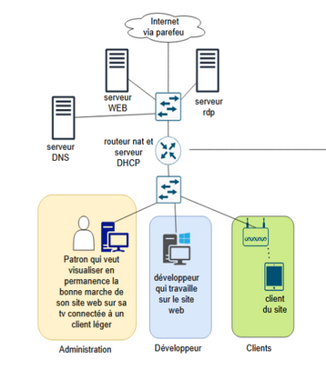

01/09/2024 — 06/01/2025
Projet EGNARO
Hébergement de site web et réalisation d'un intranet pour une entreprise fictive incluant la configuration et l'hébergement de services web.
Gérer le patrimoine informatique
Répondre aux incidents et aux demandes d'assistance
Travailler en mode projet
Organiser son développement professionnel